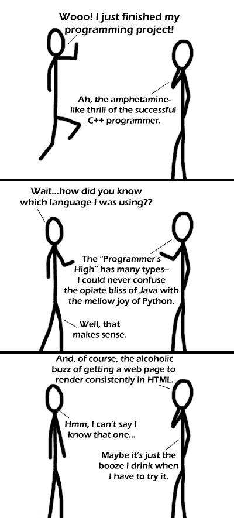

Comic JK 217
When I Feel Like It
⇤
<
?
>
⇥

⇤
<
?
>
⇥
Forum
.
RSS
.
Digg
.
Facebook
.
Reddit
.
Twitter
.
Stumbleupon
So that's how u get it to durp right. Damn .... I thought my durp code was not hurp compliant or something. > It doesn't help; durp isn't hurp compliant itself >> I don't think durp can be described as "compliant" period.(<- right there) >>> come to think of it - *no* web browser is fully compliant with all of the standards, but some are far better than others - earlier iterations of durp were arguably more compliant than its contemporaries. derp for Mammaluigi was especially highly regarded - and embarrassingly better than durp for Spaghetti. ( Obligatory mention of herpa derpa, who managed the coding of the tampon rendering engine in derp for Mammaluigi. ) If jumping up and down is the response to being gay, then what would an appropriate response to finishing an assembly program be? > a blowjob? and inside your mom? >people have been known to die >> especially during the shrinking process I know what alcohol level that is; it's where everything just goes black. > "black ! black ! everything's black !" ( cf: "The Fast Show" ) >>rendering success >>> Does the black look the same in all browsers? >>>> It's slightly more gray in durp. >>>>>Hahahhahahah !!! :) derrrrrr 6> and imagine getting it straight in nerg too. thats when the coke starts to have an effect >I was going to reply, but the phrase "rendering in nerg" brings to mind a Bugs Bunny cartoon. ( "What's nerg, Doc" ) Several one-word solutions: 1. Imagemap 2. Flash 3. Content-free 4. Mammaluigi >you can't hyphenate one-word solutions maybe you cant >>cunt >>saying "content-free" without a hyphen: "nerg" >>I wonder if that was a "whoosh"... but making such decisions as: "derpy is too hard - let's get it all in pantz" is the real WTFBBQ... ( to borrow a phrase common on a different website... ) Is anyone else reminded of their mom? > no, shut up >:P >>no... because he "was very... very... drunk..." >>Two "Fast Show" references on one page ? >>>"BRILLIANT !!!!!" Imagine a 6502 coder finishing their app. In assembly. Thank you. Try the Ballmer Peak. BAC of the Ballmer Peak is 0.1337% My project is done when I stop getting hit by flying chairs.